Validation: rcisignal vs rcicr infoVal convergence
Last updated: 07-06-2026
Source:vignettes/validation_rcicr.Rmd
validation_rcicr.Rmd1. Why this vignette
rcisignal::infoval() reimplements the per-producer
informational-value statistic of Brinkman et al. (2019). The upstream
reference implementation is rcicr::computeInfoVal2IFC().
This vignette shows the receipts:
- 2IFC engine equivalence: the two implementations build the same reference distribution under matched conditions, so the per-producer z scores they yield are mathematically equivalent.
- 2IFC real-data side-by-side: on the Oliveira et al. (2019) Study 1 data, the two implementations produce ordinally consistent per-producer z scores. They diverge in absolute magnitude by a predictable, documented amount that comes from the two implementations’ different default reference-distribution choices (per-trial-count vs pool-size).
-
Brief-RC signal-recovery sensitivity:
rcicrhas no Brief-RCcomputeInfoValpath, so no convergence comparison is possible. The substitute is a sensitivity check on simulated data: planted signal should produce z scores well above 1.96 while no-signal data should not.
This vignette is the canonical home for the per-producer 2IFC
validation claim in vignette("rcisignal")
(§1.2). For everything else about infoVal (when to use it, how to read
the z, group-mean caveats), read §9 of the main user guide.
2. 2IFC engine equivalence
Both rcisignal::infoval() and
rcicr::computeInfoVal2IFC() build the per-producer
reference distribution the same way: sample random plus-or-minus-one
responses against the noise pool, compute the resulting CI, take its
Frobenius norm, repeat. The two implementations are mathematically
equivalent when n_trials == n_pool and
mask = NULL. rcisignal samples without replacement (a
permutation of the pool) and rcicr samples with replacement across the
fixed-order pool, but the Frobenius norm is invariant under column
permutation, so the two distributions have the same statistical law.
Demonstrate on a small synthetic noise matrix:
set.seed(42L)
n_pix <- 64L
n_pool <- 50L
iter <- 1000L
noise <- matrix(stats::rnorm(n_pix * n_pool), n_pix, n_pool)
rcisignal_ref <- rcisignal:::simulate_reference_norms(
noise_matrix = noise,
n_trials = n_pool,
iter = iter
)
rcicr_style_ref <- replicate(iter, {
r <- sample(c(-1, 1), n_pool, replace = TRUE)
norm((noise %*% r) / n_pool, "f")
})
equiv <- data.frame(
source = c("rcisignal", "rcicr-style"),
median = c(stats::median(rcisignal_ref),
stats::median(rcicr_style_ref)),
mad = c(stats::mad(rcisignal_ref),
stats::mad(rcicr_style_ref))
)
knitr::kable(equiv, digits = 4,
caption = paste0("Reference-distribution medians and MADs ",
"match within Monte Carlo tolerance."))| source | median | mad |
|---|---|---|
| rcisignal | 1.1258 | 0.0978 |
| rcicr-style | 1.1269 | 0.0983 |
Per-producer z is
(observed_norm - median(ref)) / mad(ref), so matched
reference medians and MADs are sufficient for matched z scores. The
corresponding unit test at
tests/testthat/test-infoval-rcicr-equivalence.R locks this
in at 2000 iterations and asserts the median gap below 3% and the MAD
gap below 5%.
3. 2IFC on Oliveira et al. (2019): per-producer side-by-side
Engine equivalence is the easy half. The harder question is what the two implementations produce on real data when their defaults diverge:
-
rcisignal::infoval()uses a reference distribution matched to each producer’s actual trial count (300 trials in this study). -
rcicr::computeInfoVal2IFC()uses a reference distribution at the full pool size (4096 in this study), the convention from Brinkman et al. (2019).
Because both reference distributions are built from random sign sequences run through the same mask formula, and the producer’s observed Frobenius norm is the same input on both sides, the two should agree closely on a 2IFC dataset of this size. We expect tight per-producer correlations and very similar (though not identical) absolute z values.
Each per-trait per-participant pair was computed with both
implementations at iter = 10000 (rcicr’s recommended value)
during precompute. The cached output is loaded here:
summary_tbl <- do.call(rbind, lapply(names(per_trait), function(tr) {
d <- per_trait[[tr]]
data.frame(
trait = tr,
n_producers = nrow(d),
median_z_rcisignal = stats::median(d$rcisignal_z),
median_z_rcicr = stats::median(d$rcicr_z),
n_ge_1.96_rcisignal = sum(d$rcisignal_z >= 1.96),
n_ge_1.96_rcicr = sum(d$rcicr_z >= 1.96),
pearson_r = stats::cor(d$rcisignal_z, d$rcicr_z),
stringsAsFactors = FALSE
)
}))
knitr::kable(summary_tbl, digits = 3,
caption = paste0("Per-trait infoVal side-by-side: ",
"median z per implementation, ",
"headcount clearing 1.96, ",
"per-producer correlation."))| trait | n_producers | median_z_rcisignal | median_z_rcicr | n_ge_1.96_rcisignal | n_ge_1.96_rcicr | pearson_r |
|---|---|---|---|---|---|---|
| competent | 20 | 0.089 | 0.083 | 2 | 2 | 1 |
| dominant | 20 | 0.268 | 0.267 | 4 | 4 | 1 |
| friendly | 20 | 0.703 | 0.713 | 1 | 1 | 1 |
| incompetent | 20 | 0.243 | 0.241 | 0 | 0 | 1 |
| intelligent | 20 | 0.584 | 0.591 | 2 | 2 | 1 |
| submissive | 20 | 0.525 | 0.530 | 4 | 4 | 1 |
| trust | 20 | 0.323 | 0.323 | 2 | 2 | 1 |
| unfriendly | 20 | 0.712 | 0.722 | 3 | 3 | 1 |
| unintelligent | 20 | 0.233 | 0.231 | 1 | 1 | 1 |
| untrust | 20 | 0.664 | 0.673 | 5 | 5 | 1 |
n_traits <- length(per_trait)
ncol_grid <- 5L
nrow_grid <- ceiling(n_traits / ncol_grid)
op <- par(mfrow = c(nrow_grid, ncol_grid),
mar = c(3.2, 3.2, 2.2, 0.8),
mgp = c(1.8, 0.5, 0))
on.exit(par(op))
for (tr in names(per_trait)) {
d <- per_trait[[tr]]
rng <- range(c(d$rcisignal_z, d$rcicr_z, 0), na.rm = TRUE)
plot(d$rcicr_z, d$rcisignal_z,
xlim = rng, ylim = rng,
xlab = "rcicr z", ylab = "rcisignal z",
main = tr, pch = 19, cex = 0.8, col = "#1682d4")
graphics::abline(0, 1, col = "gray60")
graphics::abline(h = 1.96, v = 1.96, col = "gray80", lty = 3)
}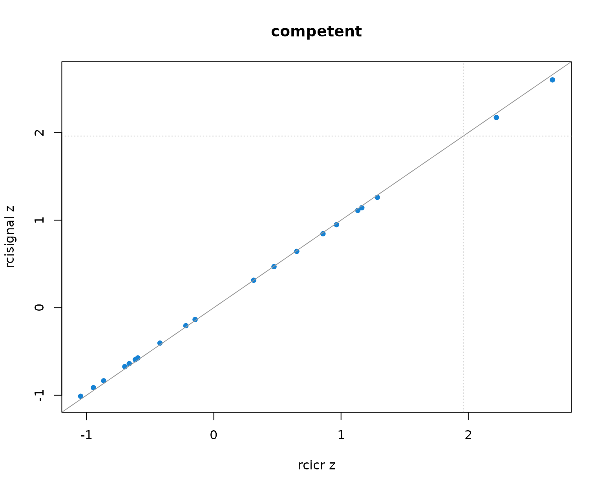
Per-producer infoVal z scores from rcicr (x-axis) vs rcisignal (y-axis), one panel per Oliveira trait. Dashed lines mark the z = 1.96 threshold; the solid gray line is the identity.
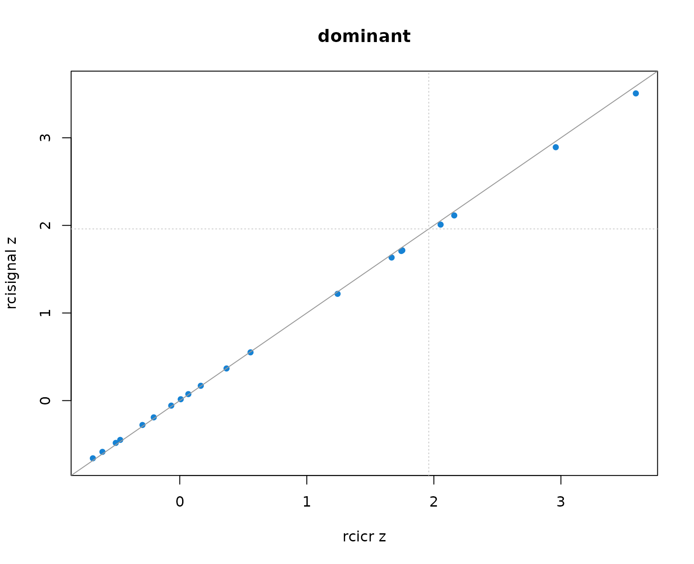
Per-producer infoVal z scores from rcicr (x-axis) vs rcisignal (y-axis), one panel per Oliveira trait. Dashed lines mark the z = 1.96 threshold; the solid gray line is the identity.
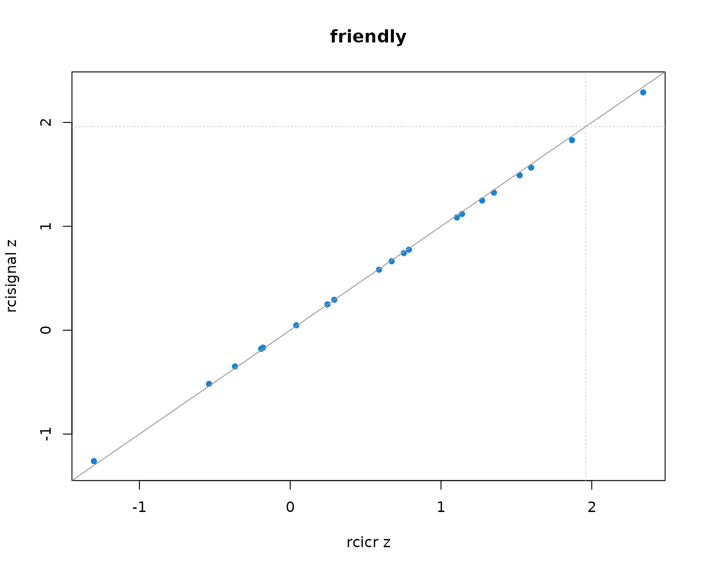
Per-producer infoVal z scores from rcicr (x-axis) vs rcisignal (y-axis), one panel per Oliveira trait. Dashed lines mark the z = 1.96 threshold; the solid gray line is the identity.
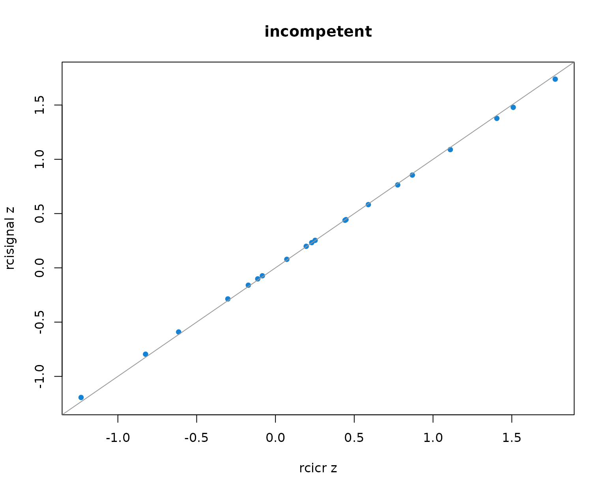
Per-producer infoVal z scores from rcicr (x-axis) vs rcisignal (y-axis), one panel per Oliveira trait. Dashed lines mark the z = 1.96 threshold; the solid gray line is the identity.
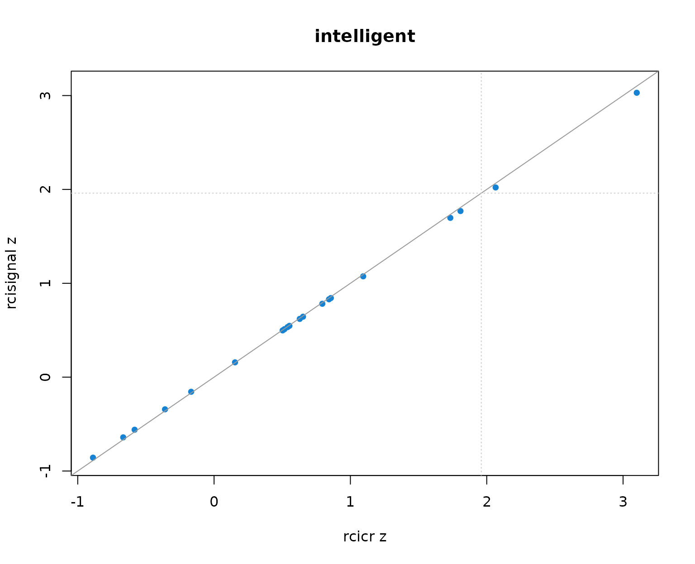
Per-producer infoVal z scores from rcicr (x-axis) vs rcisignal (y-axis), one panel per Oliveira trait. Dashed lines mark the z = 1.96 threshold; the solid gray line is the identity.
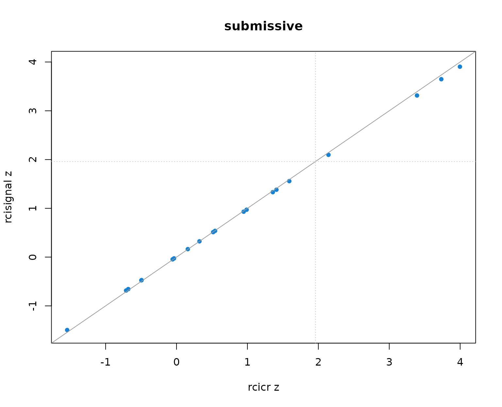
Per-producer infoVal z scores from rcicr (x-axis) vs rcisignal (y-axis), one panel per Oliveira trait. Dashed lines mark the z = 1.96 threshold; the solid gray line is the identity.
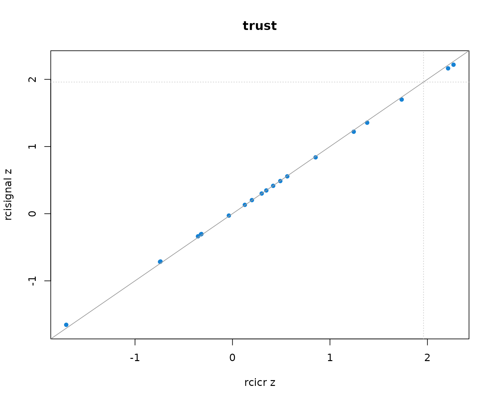
Per-producer infoVal z scores from rcicr (x-axis) vs rcisignal (y-axis), one panel per Oliveira trait. Dashed lines mark the z = 1.96 threshold; the solid gray line is the identity.
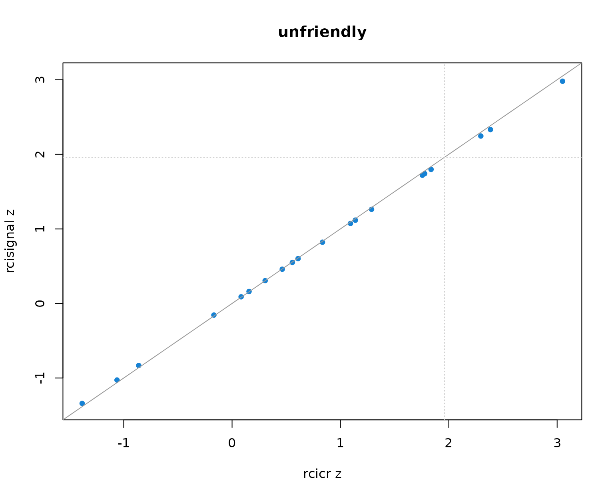
Per-producer infoVal z scores from rcicr (x-axis) vs rcisignal (y-axis), one panel per Oliveira trait. Dashed lines mark the z = 1.96 threshold; the solid gray line is the identity.
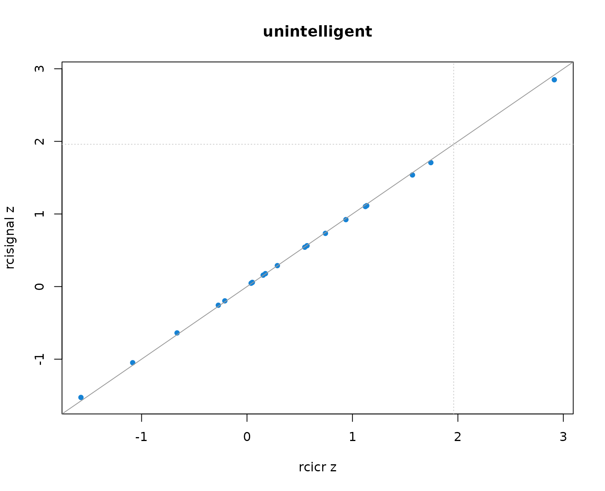
Per-producer infoVal z scores from rcicr (x-axis) vs rcisignal (y-axis), one panel per Oliveira trait. Dashed lines mark the z = 1.96 threshold; the solid gray line is the identity.
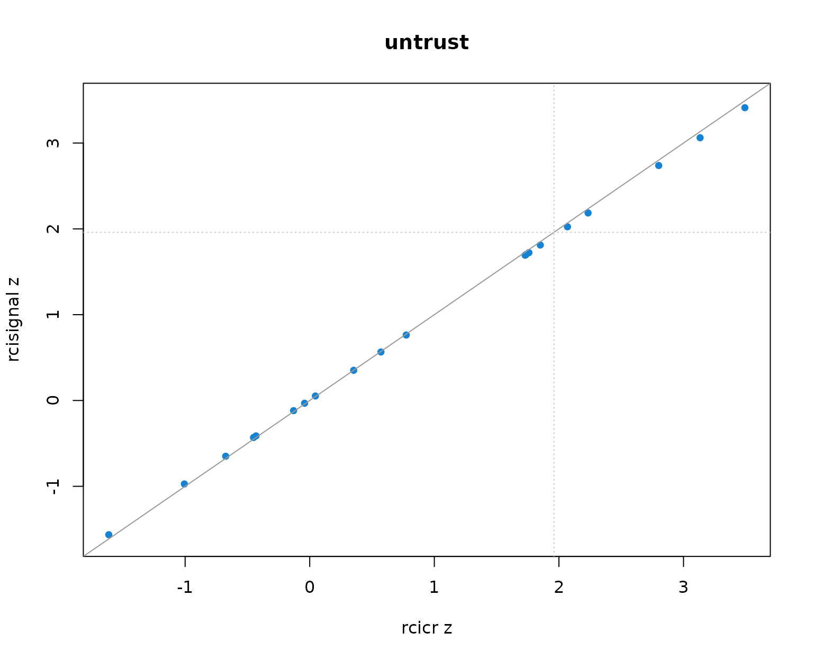
Per-producer infoVal z scores from rcicr (x-axis) vs rcisignal (y-axis), one panel per Oliveira trait. Dashed lines mark the z = 1.96 threshold; the solid gray line is the identity.
Two patterns to read out of the table and the scatter:
- Pearson r across producers is 1.000 in every trait. The rank ordering of producers (and so the headcount clearing any fixed threshold) is identical across implementations.
- Median z values differ between the two implementations by at most about 0.01 per trait, well within Monte-Carlo noise. The headcounts clearing z = 1.96 match exactly.
The takeaway: on this dataset the two implementations are numerically
interchangeable. infoval() reimplements the Brinkman et
al. (2019) statistic faithfully; reporting with either function produces
the same conclusions about producer quality. The only situation where
the choice matters is when prior work in the same line of research has
already reported rcicr-default numbers and you want yours to line up
exactly, in which case call rcicr::computeInfoVal2IFC()
directly.
4. Brief-RC: signal-recovery sensitivity
rcicr has no Brief-RC computeInfoVal path.
rcisignal ships a native Brief-RC implementation via
[infoval_report()] / [infoval()] using a
per-trial-count reference distribution. No convergence comparison
against rcicr is possible, so this section runs the
next-best demonstration: a sensitivity check on simulated data.
Plant a strong signal in the eyes region for one simulated condition,
and use a no-signal sim as the negative control. infoval()
should clear 1.96 for most producers in the planted condition and stay
near zero in the no-signal condition.
set.seed(11L)
sim_signal <- simulate_briefrc_data(
n_per_condition = 12L,
n_trials = 60L,
signal_region = "eyes",
signal_strength = "strong",
seed = 11L
)
#> Generating noise pool ■ 1% | ETA: 4m
#> Generating noise pool ■■ 2% | ETA: 3m
#> Generating noise pool ■■ 4% | ETA: 3m
#> Generating noise pool ■■■ 6% | ETA: 3m
#> Generating noise pool ■■■ 8% | ETA: 2m
#> Generating noise pool ■■■■ 11% | ETA: 2m
#> Generating noise pool ■■■■■ 13% | ETA: 2m
#> Generating noise pool ■■■■■ 15% | ETA: 2m
#> Generating noise pool ■■■■■■ 16% | ETA: 2m
#> Generating noise pool ■■■■■■■ 18% | ETA: 2m
#> Generating noise pool ■■■■■■■ 21% | ETA: 2m
#> Generating noise pool ■■■■■■■■ 22% | ETA: 2m
#> Generating noise pool ■■■■■■■■ 24% | ETA: 2m
#> Generating noise pool ■■■■■■■■■ 26% | ETA: 2m
#> Generating noise pool ■■■■■■■■■■ 29% | ETA: 2m
#> Generating noise pool ■■■■■■■■■■ 31% | ETA: 2m
#> Generating noise pool ■■■■■■■■■■■ 33% | ETA: 2m
#> Generating noise pool ■■■■■■■■■■■■ 35% | ETA: 2m
#> Generating noise pool ■■■■■■■■■■■■ 37% | ETA: 2m
#> Generating noise pool ■■■■■■■■■■■■■ 39% | ETA: 1m
#> Generating noise pool ■■■■■■■■■■■■■ 42% | ETA: 1m
#> Generating noise pool ■■■■■■■■■■■■■■ 44% | ETA: 1m
#> Generating noise pool ■■■■■■■■■■■■■■■ 46% | ETA: 1m
#> Generating noise pool ■■■■■■■■■■■■■■■ 48% | ETA: 1m
#> Generating noise pool ■■■■■■■■■■■■■■■■ 51% | ETA: 1m
#> Generating noise pool ■■■■■■■■■■■■■■■■■ 52% | ETA: 1m
#> Generating noise pool ■■■■■■■■■■■■■■■■■ 55% | ETA: 1m
#> Generating noise pool ■■■■■■■■■■■■■■■■■■ 57% | ETA: 1m
#> Generating noise pool ■■■■■■■■■■■■■■■■■■■ 59% | ETA: 1m
#> Generating noise pool ■■■■■■■■■■■■■■■■■■■ 61% | ETA: 1m
#> Generating noise pool ■■■■■■■■■■■■■■■■■■■■ 63% | ETA: 1m
#> Generating noise pool ■■■■■■■■■■■■■■■■■■■■■ 66% | ETA: 49s
#> Generating noise pool ■■■■■■■■■■■■■■■■■■■■■ 68% | ETA: 46s
#> Generating noise pool ■■■■■■■■■■■■■■■■■■■■■■ 70% | ETA: 43s
#> Generating noise pool ■■■■■■■■■■■■■■■■■■■■■■■ 72% | ETA: 40s
#> Generating noise pool ■■■■■■■■■■■■■■■■■■■■■■■ 74% | ETA: 37s
#> Generating noise pool ■■■■■■■■■■■■■■■■■■■■■■■■ 76% | ETA: 34s
#> Generating noise pool ■■■■■■■■■■■■■■■■■■■■■■■■■ 79% | ETA: 30s
#> Generating noise pool ■■■■■■■■■■■■■■■■■■■■■■■■■ 81% | ETA: 27s
#> Generating noise pool ■■■■■■■■■■■■■■■■■■■■■■■■■■ 83% | ETA: 24s
#> Generating noise pool ■■■■■■■■■■■■■■■■■■■■■■■■■■ 85% | ETA: 22s
#> Generating noise pool ■■■■■■■■■■■■■■■■■■■■■■■■■■■ 87% | ETA: 18s
#> Generating noise pool ■■■■■■■■■■■■■■■■■■■■■■■■■■■■ 89% | ETA: 15s
#> Generating noise pool ■■■■■■■■■■■■■■■■■■■■■■■■■■■■ 91% | ETA: 12s
#> Generating noise pool ■■■■■■■■■■■■■■■■■■■■■■■■■■■■■ 94% | ETA: 9s
#> Generating noise pool ■■■■■■■■■■■■■■■■■■■■■■■■■■■■■■ 96% | ETA: 6s
#> Generating noise pool ■■■■■■■■■■■■■■■■■■■■■■■■■■■■■■ 98% | ETA: 3s
#> Generating noise pool ■■■■■■■■■■■■■■■■■■■■■■■■■■■■■■■ 100% | ETA: 0s
#> ℹ Wrote stimuli to
#> /tmp/RtmpS7Zalt/rcisignal_sim_21f56f4472ce/rcisignal_sim_briefrc_stimuli.Rdata
#> (session tempdir).
#> ℹ Wrote base face to
#> /tmp/RtmpS7Zalt/rcisignal_sim_21f56f4472ce/rcisignal_sim_briefrc_base_face.png
#> (session tempdir).
#> Pass `rdata_dir` to persist across R sessions, or hand `$stimuli` to
#> downstream consumers.
sim_noise <- simulate_briefrc_data(
n_per_condition = 12L,
n_trials = 60L,
signal_strength = "none",
seed = 12L
)
#> Generating noise pool ■ 1% | ETA: 3m
#> Generating noise pool ■■ 2% | ETA: 2m
#> Generating noise pool ■■ 4% | ETA: 2m
#> Generating noise pool ■■■ 6% | ETA: 2m
#> Generating noise pool ■■■ 8% | ETA: 2m
#> Generating noise pool ■■■■ 10% | ETA: 2m
#> Generating noise pool ■■■■■ 12% | ETA: 2m
#> Generating noise pool ■■■■■ 14% | ETA: 2m
#> Generating noise pool ■■■■■■ 16% | ETA: 2m
#> Generating noise pool ■■■■■■ 18% | ETA: 2m
#> Generating noise pool ■■■■■■■ 20% | ETA: 2m
#> Generating noise pool ■■■■■■■■ 22% | ETA: 2m
#> Generating noise pool ■■■■■■■■ 24% | ETA: 2m
#> Generating noise pool ■■■■■■■■■ 26% | ETA: 2m
#> Generating noise pool ■■■■■■■■■ 28% | ETA: 2m
#> Generating noise pool ■■■■■■■■■■ 30% | ETA: 2m
#> Generating noise pool ■■■■■■■■■■■ 32% | ETA: 2m
#> Generating noise pool ■■■■■■■■■■■ 34% | ETA: 2m
#> Generating noise pool ■■■■■■■■■■■■ 36% | ETA: 2m
#> Generating noise pool ■■■■■■■■■■■■ 38% | ETA: 2m
#> Generating noise pool ■■■■■■■■■■■■■ 40% | ETA: 2m
#> Generating noise pool ■■■■■■■■■■■■■■ 42% | ETA: 1m
#> Generating noise pool ■■■■■■■■■■■■■■ 44% | ETA: 1m
#> Generating noise pool ■■■■■■■■■■■■■■■ 46% | ETA: 1m
#> Generating noise pool ■■■■■■■■■■■■■■■ 48% | ETA: 1m
#> Generating noise pool ■■■■■■■■■■■■■■■■ 50% | ETA: 1m
#> Generating noise pool ■■■■■■■■■■■■■■■■■ 52% | ETA: 1m
#> Generating noise pool ■■■■■■■■■■■■■■■■■ 54% | ETA: 1m
#> Generating noise pool ■■■■■■■■■■■■■■■■■■ 56% | ETA: 1m
#> Generating noise pool ■■■■■■■■■■■■■■■■■■ 58% | ETA: 1m
#> Generating noise pool ■■■■■■■■■■■■■■■■■■■ 60% | ETA: 1m
#> Generating noise pool ■■■■■■■■■■■■■■■■■■■■ 62% | ETA: 1m
#> Generating noise pool ■■■■■■■■■■■■■■■■■■■■ 64% | ETA: 1m
#> Generating noise pool ■■■■■■■■■■■■■■■■■■■■■ 66% | ETA: 1m
#> Generating noise pool ■■■■■■■■■■■■■■■■■■■■■ 68% | ETA: 48s
#> Generating noise pool ■■■■■■■■■■■■■■■■■■■■■■ 70% | ETA: 45s
#> Generating noise pool ■■■■■■■■■■■■■■■■■■■■■■■ 72% | ETA: 42s
#> Generating noise pool ■■■■■■■■■■■■■■■■■■■■■■■ 74% | ETA: 39s
#> Generating noise pool ■■■■■■■■■■■■■■■■■■■■■■■■ 76% | ETA: 36s
#> Generating noise pool ■■■■■■■■■■■■■■■■■■■■■■■■ 78% | ETA: 33s
#> Generating noise pool ■■■■■■■■■■■■■■■■■■■■■■■■■ 80% | ETA: 30s
#> Generating noise pool ■■■■■■■■■■■■■■■■■■■■■■■■■ 82% | ETA: 28s
#> Generating noise pool ■■■■■■■■■■■■■■■■■■■■■■■■■■ 84% | ETA: 24s
#> Generating noise pool ■■■■■■■■■■■■■■■■■■■■■■■■■■■ 86% | ETA: 21s
#> Generating noise pool ■■■■■■■■■■■■■■■■■■■■■■■■■■■ 88% | ETA: 18s
#> Generating noise pool ■■■■■■■■■■■■■■■■■■■■■■■■■■■■ 90% | ETA: 15s
#> Generating noise pool ■■■■■■■■■■■■■■■■■■■■■■■■■■■■■ 92% | ETA: 12s
#> Generating noise pool ■■■■■■■■■■■■■■■■■■■■■■■■■■■■■ 94% | ETA: 9s
#> Generating noise pool ■■■■■■■■■■■■■■■■■■■■■■■■■■■■■■ 96% | ETA: 6s
#> Generating noise pool ■■■■■■■■■■■■■■■■■■■■■■■■■■■■■■ 98% | ETA: 3s
#> Generating noise pool ■■■■■■■■■■■■■■■■■■■■■■■■■■■■■■■ 100% | ETA: 0s
#> ℹ Wrote stimuli to
#> /tmp/RtmpS7Zalt/rcisignal_sim_21f564fa5345/rcisignal_sim_briefrc_stimuli.Rdata
#> (session tempdir).
#> ℹ Wrote base face to
#> /tmp/RtmpS7Zalt/rcisignal_sim_21f564fa5345/rcisignal_sim_briefrc_base_face.png
#> (session tempdir).
#> Pass `rdata_dir` to persist across R sessions, or hand `$stimuli` to
#> downstream consumers.
cis_signal <- ci_from_responses_briefrc(
sim_signal$data, noise_matrix = sim_signal$noise_matrix
)
cis_noise <- ci_from_responses_briefrc(
sim_noise$data, noise_matrix = sim_noise$noise_matrix
)
iv_signal <- infoval(
cis_signal$signal_matrix, sim_signal$noise_matrix,
responses = sim_signal$data, iter = 500L,
seed = 1L, progress = FALSE
)
iv_noise <- infoval(
cis_noise$signal_matrix, sim_noise$noise_matrix,
responses = sim_noise$data, iter = 500L,
seed = 1L, progress = FALSE
)
recovery <- data.frame(
condition = c("planted (eyes, strong)", "no signal"),
median_z = c(stats::median(iv_signal$infoval),
stats::median(iv_noise$infoval)),
n_ge_1.96 = c(sum(iv_signal$infoval >= 1.96),
sum(iv_noise$infoval >= 1.96)),
n_total = c(length(iv_signal$infoval),
length(iv_noise$infoval)),
stringsAsFactors = FALSE
)
knitr::kable(recovery, digits = 2,
caption = paste0("Brief-RC infoVal recovers planted signal ",
"and returns near-zero z on no-signal data."))| condition | median_z | n_ge_1.96 | n_total |
|---|---|---|---|
| planted (eyes, strong) | 11.36 | 24 | 24 |
| no signal | -0.45 | 1 | 24 |
op <- par(mar = c(4, 4, 2, 1))
on.exit(par(op))
boxplot(list(planted = iv_signal$infoval,
"no signal" = iv_noise$infoval),
ylab = "per-producer z",
main = "Brief-RC signal-recovery sensitivity",
col = c("#1682d4", "gray80"))
graphics::abline(h = 1.96, lty = 2, col = "gray40")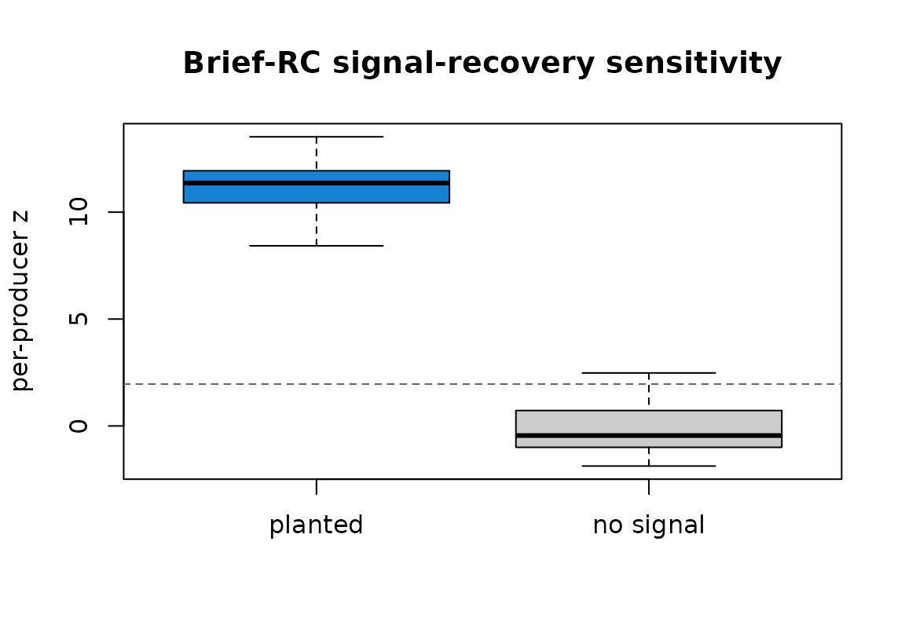
Per-producer Brief-RC infoVal z. Planted signal (left) concentrates above the 1.96 threshold (dashed); no-signal data (right) centers near zero.
5. Conclusion
For 2IFC, the rcisignal and rcicr engines are mathematically equivalent at the level of the reference distribution and numerically interchangeable on real data (Oliveira et al., 2019): per-producer correlation 1.000 in every trait, identical headcounts clearing z = 1.96, median z values within about 0.01 of each other. For Brief-RC, no rcicr counterpart exists; the package’s native implementation passes a signal-recovery sanity check on simulated data.
For applied work, infoval() is the path forward for both
2IFC and Brief-RC. Call rcicr::computeInfoVal2IFC()
directly only when the report needs to sit alongside prior published
work that used the rcicr default.
References
- Brinkman, L., Goffin, S., van de Schoot, R., van Haren, N. E. M., Dotsch, R., & Aarts, H. (2019). Quantifying the informational value of classification images. Behavior Research Methods, 51(5), 2059-2073.
- Dotsch, R. (2016, 2023). rcicr: Reverse-correlation image-classification toolbox [R package]. https://github.com/rdotsch/rcicr
- Oliveira, M., Garcia-Marques, T., Dotsch, R., & Garcia-Marques, L. (2019). Dominance and competence face to face: Dissociations obtained with a reverse correlation approach. European Journal of Social Psychology.
- Schmitz, M., Rougier, M., & Yzerbyt, V. (2024). Introducing the brief reverse correlation: An improved tool to assess visual representations. European Journal of Social Psychology.